This directory contains some samples for Rogue Wave Views.
| Interacting with Graphic Objects | |
| 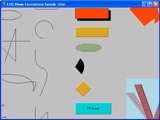 | Displaying and interacting with graphic objects. |
| Convex Hull | |
| 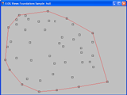 |
Using IlPool in a recursive algorithm.
|
| Reading and Displaying Bitmaps | |
| 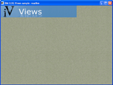 | Loads and displays supported bitmap images. |
| Using Bitmap Data | |
| 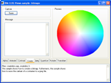 | Shows you how to use bitmap data. |
| Using the Color Quantizer | |
| 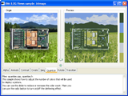 | Shows you how to use the color quantizer. |
| Using Bitmap Data Operators | |
| 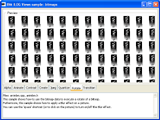 | Shows you how to use bitmap data operators. |
| Using the JPEG Streamer | |
| 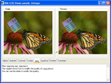 | Shows you how to use the JPEG streamer. |
| Using an Animation Handler | |
| 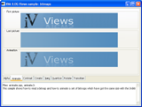 |
Shows you how to use the IlvBitmapAnimationHandler class.
|
| Using Alpha Blending | |
| 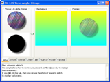 | Shows you how to use alpha blending. |
| Using a Bitmap Transition Handler | |
| 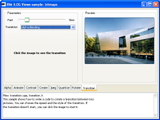 |
Shows you how to use the IlvBitmapTransitionHandler class.
|
| Using IlvIndexedBitmapData | |
| 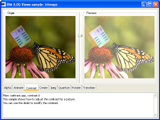 | Shows you how to use the IlvIndexedBitmapData class. |
| Displacing Pixels | |
| 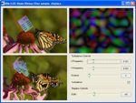 | Shows how to distort an image using turbulence. |
| Creating an Emboss Effect | |
| 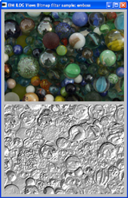 | Shows how to achieve an embossing effect. |
| Using the IlvFilteredGraphic Class | |
| 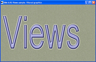 |
Shows how to use the the IlvFilteredGraphic class.
|
| Creating a Gold Effect | |
| 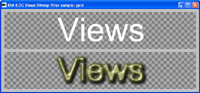 | Shows how to use bitmap filters to create a gold effect. |
| Creating a Relief Effect | |
| 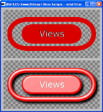 | Shows how to use bitmap filters to create a relief effect. |
| Basic PostScript Printing | |
| 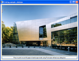 | An example of how to print using Postscript printing. |
| Postscript Printing using a Printing Setting Dialog Box | |
An example of how to print using an IlvPSPrinter and an IlvPostscripPrinterDialog instance.
| |
| Postscript Printing using a Printing Preview Displayer | |
| An example of how to print using Postscript printing with a printing preview displayer. | |
| Basic Windows Printing | |
| 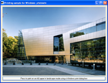 | An example of how to print using a Windows printer. |
| Custom Windows Printing without any Dialog Box | |
An example of how to print using IlvWindowsPrinter and an IlvWindowsPrinterDCFactory subclass.
| |
| Windows Printing using a Printing Preview Displayer | |
An example of how to print using IlvWindowsPrinter printing with a printing preview displayer.
| |
IlvTable object can be extended.
| Extending the IlvTable Class | |
| 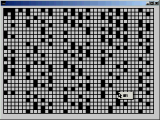 |
An example of how to extend an IlvTable that can
be used in a specialized graphic object.
|
IlvCalendarScale object can be used.
| Show the IlvCalendarScale and IlvTimeScale Classes | |
| 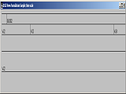 |
An example of how to use an IlvCalendarScale that can
be used in a specialized graphic object.
|
| Using GDI+ Features | |
| 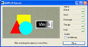 | This sample shows the GDI+ features used in Rogue Wave Views. |
{kind=link}
{kind=link}
{kind=link}
{kind=link}
{kind=link}
{kind=link}
{kind=link}
{kind=link}
{kind=link}
{kind=link}
{kind=link}
{kind=link}
{kind=link}
{kind=link}
{kind=link}
{kind=link}
{kind=link}
{kind=link}
{kind=link}
{kind=link}
{kind=link}
{kind=link}
{kind=link}
{kind=link}
{kind=link}